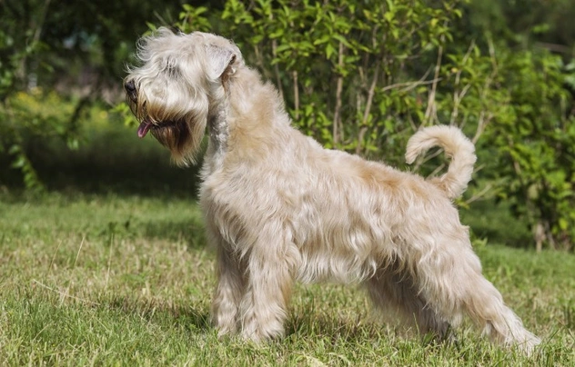

Presentación

El Irish Soft Coated Wheaten Terrier es un perro de tamaño mediano, robusto y distinguido por su pelaje único de color trigo, que es suave, sedoso y cae en ondas naturales. A diferencia de otros terriers, su pelo no tiene capa interna y muda muy poco, lo que le da un aspecto elegante y natural que resalta su constitución cuadrada y su expresión alegre tras su característico flequillo.
Personalidad
Los Wheaten son conocidos por ser los más amigables del grupo terrier; son perros profundamente afectuosos, entusiastas y mantienen un espíritu de cachorro durante toda su vida. Son famosos por el "Wheaten Greet" (su forma efusiva de saludar saltando), son muy sociables con las personas y suelen llevarse mejor con otros perros que la media de los terriers gracias a su naturaleza menos agresiva.
Origen
Originario de Irlanda, este perro fue durante siglos el "perro del granjero pobre", utilizado como un trabajador versátil para pastorear ganado, vigilar la granja y cazar pequeñas presas. Comparte ancestros comunes con el Kerry Blue y el Irish Terrier, pero se mantuvo como una raza de trabajo rústica y funcional antes de ser reconocido oficialmente como una joya del patrimonio canino irlandés.
Salud
El Wheaten Terrier suele tener una esperanza de vida de entre 12 y 15 años. Aunque es una raza resistente, puede ser propenso a ciertas condiciones genéticas como nefropatías por pérdida de proteínas (PLN) o enteropatías (PLE). Es vital realizar pruebas de salud específicas y mantener un control veterinario regular para asegurar que estos problemas digestivos o renales se detecten a tiempo.
Aseo
Su pelaje sedoso es de "bajo desprendimiento" pero requiere un mantenimiento constante; se debe cepillar profundamente varias veces por semana para evitar que se formen nudos apretados cerca de la piel. No se recomienda recortar su pelo en exceso si se desea mantener su caída natural ondulada, aunque sí es necesario limpiar sus barbas después de comer y mantener sus oídos y uñas cuidados para su higiene.
Nutrición
Necesitan una dieta equilibrada y de alta calidad que favorezca la salud de su piel y su sistema digestivo. Debido a su sensibilidad a ciertas proteínas, algunos ejemplares se benefician de dietas con ingredientes seleccionados. Es importante controlar las raciones para evitar el sobrepeso, que podría ocultarse bajo su pelaje voluminoso, y asegurar que siempre tengan agua limpia a su disposición.